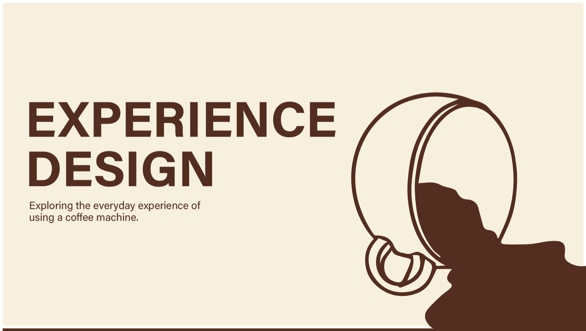
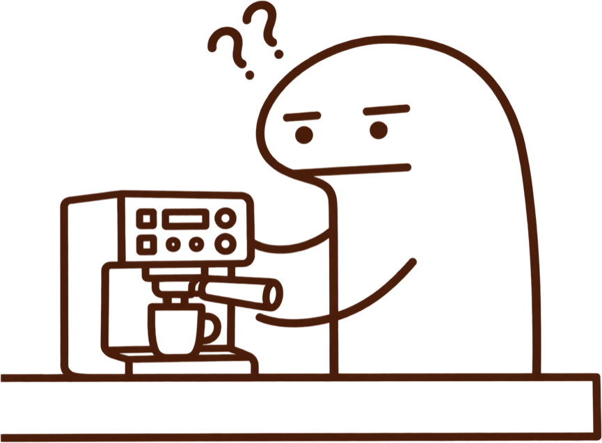
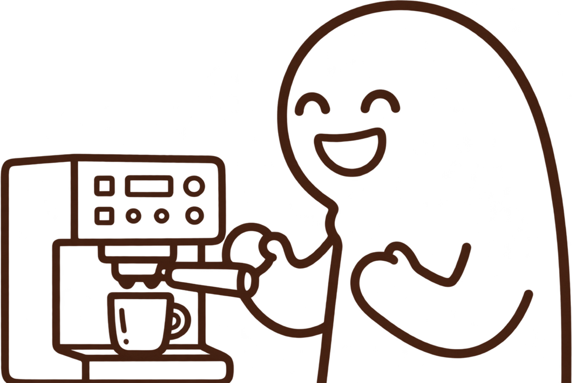
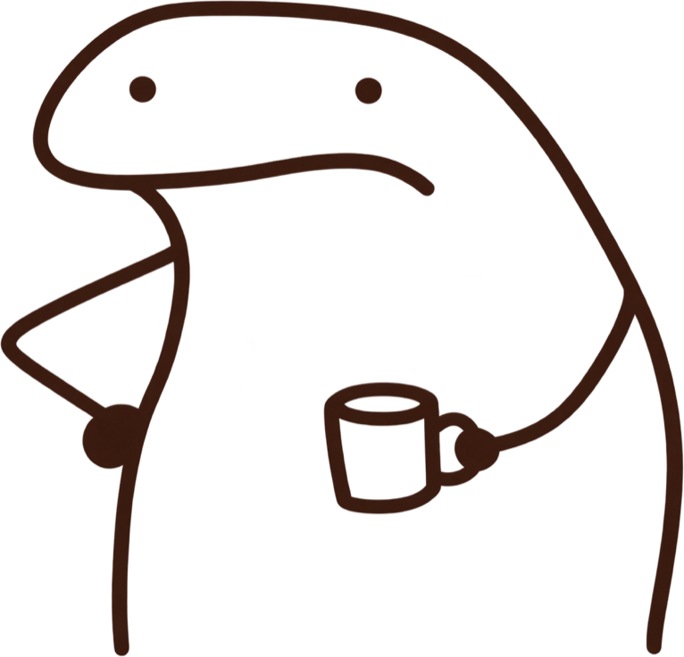
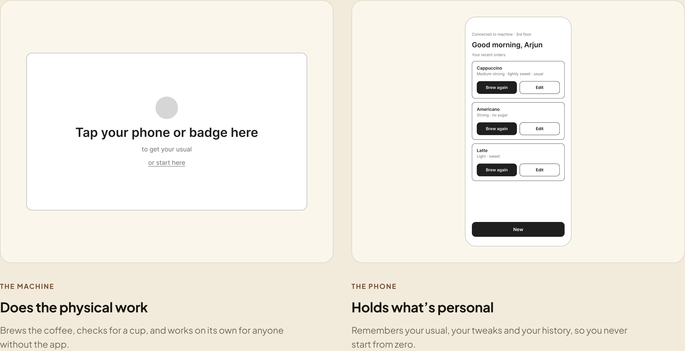
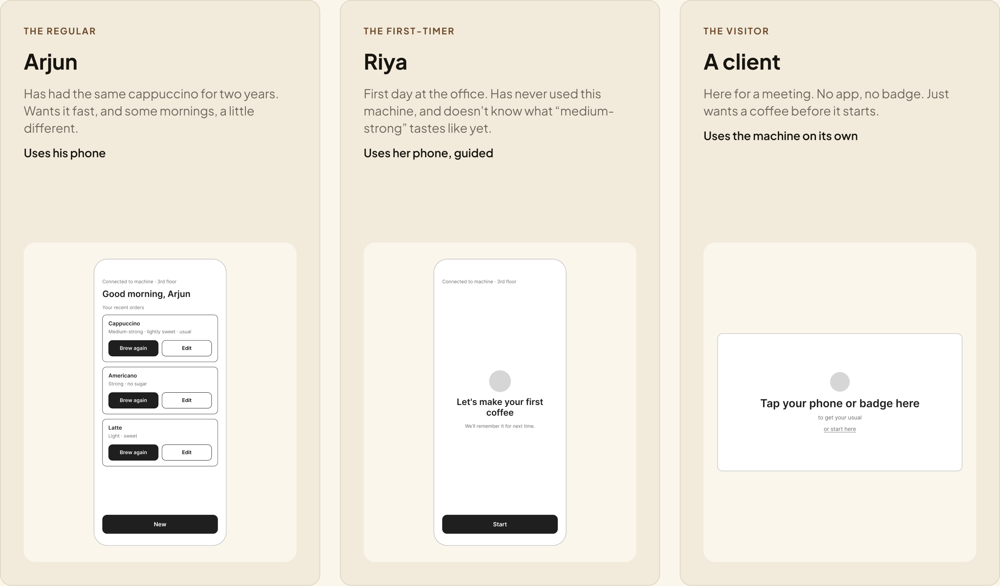
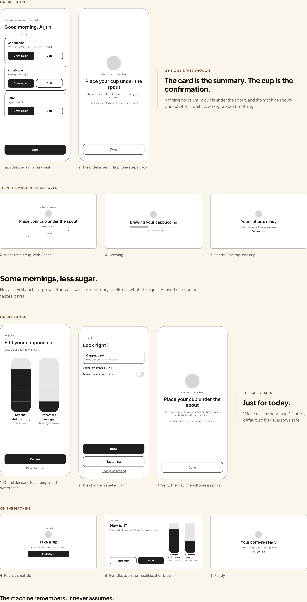
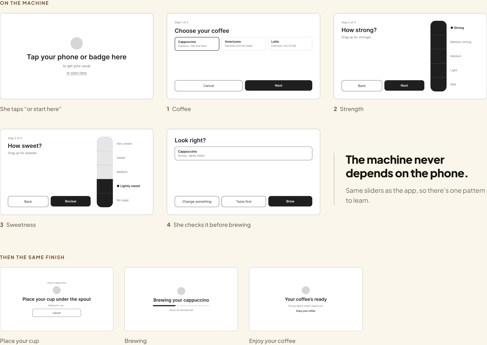
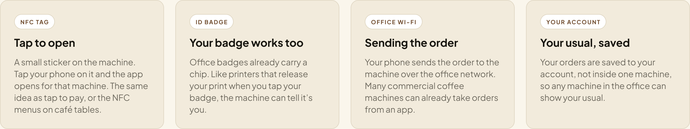

Half coffee,
full confusion.
Redesigning a coffee machine interface so no one has to stand confused in front of it again.

01 · The story
Ten seconds of confidence.
My dad told me about a new coffee machine at his office.
Everyone was curious. Nobody wanted to go first.
Until one guy stepped up.
He pressed a button. Nothing.
Another button. Still nothing.
A few more desperate taps later, his confidence had officially left the building.
All he wanted was coffee. Instead, he got an audience.

What he should have felt after using it
What he actually felt after using it.
02 · The question
So I wondered: is this just a first-timer problem, or does the machine confuse everyone?
03 · How I researched it
Two ways in: what people told me, and what they’d already written down.
I didn’t want to rely only on what people said to my face. Interviews tell you what users notice and reviews tell you what they complain about once nobody’s watching.
In-depth interviews
I interviewed 12 people face to face, across a deliberately wide age range of 18 to 50 so the findings weren’t just a student sample.
The spread mattered: some had never seen a machine, some used one daily at the office.
Amazon review analysis
I went through coffee machine reviews across different brands and noticed something interesting.
Most were rated 5 stars. But even happy customers talked about struggling to learn the machine.
Five stars for the coffee. A learning curve for making it.
04 · In depth interviews
I spoke to people who use coffee machines at home, offices and public spaces. It wasn’t very loved.
No feedback means no confidence.
“I want more feedback from the machine to get more confidence.”
Too many options means too much thinking.
“I struggled with multiple options and touchscreens the first time.”
People don’t want to learn the machine.
“I want my machine to learn and remember my drink, rather than me learning the machine.”
It’s not just first-timers. Regular users still made mistakes.
“It takes time to get used to the machine.”
05 · The pivot
From fixing errors to preventing them.
At first, the problem seemed obvious: the machine just isn’t intuitive.
But after a few discussions, that felt surface-level. The real issue was that people were scared of getting it wrong, and the machine never told them when they did.
So I started designing error feedback: warnings, messages, recovery screens.
Then a better question came up: why let the error happen at all?
Revisiting the user journey and my professor’s feedback confirmed it.
06 · The shift
And so I got to work.
I made the same coffee two ways, by hand and on the machine, and noted what I could see, steer, and fix at each step.
By hand
- 1Measure
You decide how much coffee, milk and sugar go in.
- 2Taste as you go
Sip it while it’s still being made.
- 3Fix it
Too strong? Add milk. Not sweet? Add sugar.
You stay in charge the whole way.
By machine
- 1Pick from a list
Options appear with no explanation of what they do.
- 2Press brew
Everything is decided the moment you press it.
- 3Taste at the end
By the time you sip it, it’s too late to change.
You only find out when it’s done.
What this told me
Guidance
By hand, you know what each step does. The machine shows options and leaves you to guess.
Feedback
By hand, you taste as you go. The machine tells you nothing until the cup is full.
Control
By hand, you can fix it at any point. On the machine, once it’s poured, it’s done.
Less guidance, less feedback, less control. More room for error.
The coffee wasn’t the problem. The machine just gave people very little to go on.
07 · Problem statement
When control disappears, mistakes go up. That led me here:
Coffee machines intimidate users by offering little guidance, feedback or control, turning a two-minute coffee into confusion, lost confidence, and sometimes giving up altogether.
Same project. A much sharper target.
Four things changed, and each came from the research
The question I opened with was whether this was a first-timer problem. It wasn’t. Regular users still made mistakes.
“Non-intuitive” is a verdict, not a diagnosis. Three named deficits you can design against.
A feeling became a behaviour — and a behaviour is measurable.
08 · Empathy map
I mapped what users say, think, do and feel, to find where the frustration actually sits.
“I want my machine to tell me clearly when I go wrong.”
“I rely on manuals and YouTube videos to understand what to do.”
“I want a balance between ease of use and the ability to customise.”
What the map told me
Mistakes happen in public.
Most people use machines in shared spaces. Users said they feel self-conscious, even judged, when others are around.
Confusion leads to compromise.
People settle for an easier drink than the one they wanted, or don’t try at all.
People walk away.
Many switch to cafés or manual brewing; some even returned the machine.
What they want is simple.
Clear, real-time guidance.
09 · Potential solutions
Three ideas, each answering one thing the research found.
One step at a time
A simple sequence lets users recognise choices instead of remembering how the machine works.
A summary before brewing
Users review type, strength and sweetness, and change anything before it’s too late.
A taste test
A small sample first, so users decide before committing to a full cup.
10 · The flow, screen by screen
Eight screens that guide instead of gatekeep.
Low-fidelity, because the argument here is the sequence, not the styling. Each screen confirms what just happened and says what comes next — the three solutions, made concrete.
11 · What I learned
UX isn’t linear. It loops.
This project taught me patience, the value of going deeper, and the importance of looking twice before deciding what the real problem is. It reminded me that UX isn’t linear — it loops, twists, and reveals answers slowly.
And as someone great said: mediocre insights give mediocre solutions. Extraordinary insights give extraordinary solutions.

Chapter 2
After the pour
Just when everything felt complete, one question stayed with me: what about after the coffee is poured? Because people don’t stop at “done.” We taste, adjust, personalise. Machines end the moment the cup fills, but the human experience doesn’t.
Maybe the next chapter begins right there, in the small space after the pour.
Half coffee, full confusion · Chapter 2
After the pour.
Chapter 1 made the machine easier to use.
Chapter 2 makes the coffee yours.
A proposed interaction concept.

01 — The next question
Easy to use. Tiring to repeat.
Chapter 1 made the machine easy to use. Now picture someone who loves it. Every morning they want the same coffee, so every morning they tell the machine all over again:
Cappuccino. Strong. Lightly sweet. Brew.
Monday. Tuesday. Wednesday. Thursday. Friday.
From a Chapter 1 interview
“I want my machine to learn and remember my drink, rather than me learning the machine.”
The machine got easier to use. It still didn’t know who was using it.
02 — The idea
What if the machine makes it, and your phone remembers it?
Instead of adding more buttons to the machine, I split the work. The machine does the physical part. Your phone holds what’s personal: your usual, your tweaks, your history.

03 — Three people, one machine
Same machine. Three different mornings.
To keep the design honest, I followed three people through it, each arriving with something different.

04 — Arjun, 9:02 AM
His usual, in one tap.
Arjun opens the app and his recent orders are already there. One tap on Brew again sends his usual to the machine. His phone tells him to place his cup, and the machine takes it from here.

05 — Riya’s first coffee
One choice at a time. Then, a sip.
Riya has no history yet, so the app starts empty and asks one thing per screen. Because it’s her first coffee, saving it as her usual is switched on.
06 — The visitor
No phone. No badge. Still coffee.
A client walks in before a meeting. She has no app and no badge, so the machine guides her on its own, one choice per screen, just like Chapter 1.

07 — Under the hood
Everyday technology, most of it already in the office.
Nothing here asks people to carry anything new. It uses what offices already have: phones, ID badges and a network.

These are proven, everyday technologies. How they’d be built into a specific machine is a question for the hardware team.
08 — Try it
Make a coffee with Arjun, Riya and a visitor.
A short, playable demo: pick a person, then make their coffee on a working machine and phone. It takes about three minutes.
09 — The reflection
Good coffee. A little more human.
I started by asking why people hesitate in front of a coffee machine. The answer wasn’t fewer buttons. It was a machine that knows you, and never assumes it does.
Chapter 2 is a proposed interaction concept. Nothing here has been usability tested, technically validated, or measured.